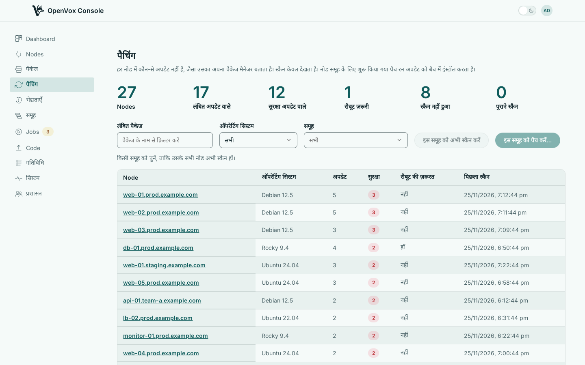

Linux Nodes को उनके छूटे हुए अपडेट के लिए स्कैन कीजिए, और उन्हें बैचों में लागू कीजिए, ऐसे तरीक़े के साथ जिससे कोई ख़राब अपडेट पूरे फ़्लीट तक पहुँचने से पहले रुक जाए।
लंबित अपडेट, जैसे हर Node का package manager उन्हें बताता है
स्कैन Node के agent से apt, dnf या yum को ऐसे मोड में चलाने को कहता है जो कुछ नहीं बदलता, फिर हर लंबित अपडेट को उसके इंस्टॉल और उपलब्ध संस्करणों के साथ दिखाता है, और यह भी कि package manager उसे सुरक्षा अपडेट कहता है या नहीं। Node यह भी बताता है कि उसे पहले से रीबूट की ज़रूरत है या नहीं।
स्कैन आपके नियंत्रण वाली समय-सारणी पर चलते हैं, या माँग पर किसी एक Node या पूरे समूह के लिए। जिस Node को स्कैन नहीं किया जा सकता, वह रिपोर्ट करने में असमर्थ के रूप में सूचीबद्ध होता है — कभी पूरी तरह पैच किया हुआ नहीं दिखाया जाता।


बैचों में पैच कीजिए, सुरक्षा-रोक के साथ
सुरक्षा अपडेट, सब कुछ, या नाम से चुने पैकेज चुनिए, और यह कि एक साथ कितने Nodes पैच करने हैं। तय कीजिए कि कितनी विफलताओं पर रन समाप्त हो, ताकि कुछ गड़बड़ होते ही आगे कोई बैच शुरू न हो। कुछ भी इंस्टॉल न करने वाले ड्राई रन से पूर्वावलोकन कीजिए, और जिन Nodes को ज़रूरत हो उन्हें काम पूरा होने पर रीबूट होने दीजिए।
प्रगति Node-दर-Node दिखाई जाती है, बीच में चुप हो जाने वाले Node को हमेशा के लिए लटका छोड़ने के बजाय चुप हुआ बताया जाता है, और पूरा होने पर Node को फिर से स्कैन किया जाता है ताकि पृष्ठ दिखाए कि वास्तव में क्या बचा है।
Windows, macOS और zypper (SUSE) Nodes स्कैन नहीं होते। वे रिपोर्ट करने में असमर्थ के रूप में सूचीबद्ध होते हैं, ताकि कवरेज की कमी दिखे, न कि उसे सब ठीक होने का प्रमाण समझ लिया जाए।
स्वयं कीजिए
Linux Nodes को लंबित पैकेज अपडेट के लिए स्कैन कीजिए, फिर उन्हें ड्राई रन, रुकने की सीमा और वैकल्पिक रीबूट के साथ बैचों में पैच कीजिए।
OpenVox Console कंटेनर इमेजों के रूप में आता है, जो हर push पर amd64 और arm64 के लिए बनती हैं, और एक अकेली बाइनरी के रूप में भी। इंस्टॉल गाइड आपको खाली होस्ट से एक चालू परिनियोजन तक ले जाते हैं - openvoxserver, openvoxdb, Postgres और कंसोल - कंटेनरों से या पैकेजों से।